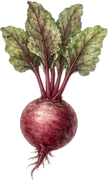

Members Area: this area will normally be password protected for obvious reasons. It is open here for demonstration only.

Produce, Plants & Seeds
A friendly place for members to share surplus produce, plants and seeds — swaps, give-aways and the occasional small plant table that helps the Association.
This is a sharing board and information page, not an online shop. Nothing is listed for sale here. To bring or collect something, come along to a meeting or get in touch via the club.
Welcome to the sharing table
One of the nicest parts of RGA life is passing on what you have too much of — a tray of tomato seedlings, a jar of saved beans, a bag of cooking apples, or a division from a thriving perennial. Fellow members often know which varieties settle best on our local clay, and happy to share that know-how too.
What you might bring or find
- Surplus seedlings and young plants (tomatoes, brassicas, salads, herbs)
- Perennials, soft fruit and herb divisions
- Home-saved or open-pollinated seed that does well here
- Cuttings and rooted plants
- Seasonal produce when the plot is overflowing
Where sharing happens
- Monthly meetings – a swap table is often available; bring labelled surplus along
- Village coffee mornings – the RGA sometimes takes part (for example at St Peter’s Rooms); open to everyone
- Member suggestions – a dedicated swap evening is always welcome if someone wants to organise one
Simple sharing etiquette
- Label clearly — variety name, the year it was saved, and any local notes (e.g. “does well on clay”)
- Bring healthy plants and viable, recent seed only — stored cool and dry, with no pests, disease or mould
- Prefer open-pollinated or heirloom seed; label hybrids if you include them
- Take a little, leave some for others
- Share growing notes when you can — that local knowledge is gold
- Be generous and patient — this is about community, not perfect trades
How to get involved
Come to a monthly meeting with something to share, or simply see what others have brought. If you have a question, an idea for a swap evening, or need to arrange something between meetings, email the Association:
Email enquiries@ruddingtongardeners.co.uk
Looking for the bulk group seed order organised by Mike Davey? That lives on its own members page.
Members Group Seed Purchase (Demo) See Meetings Back to Members